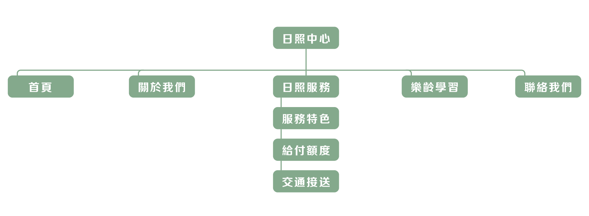
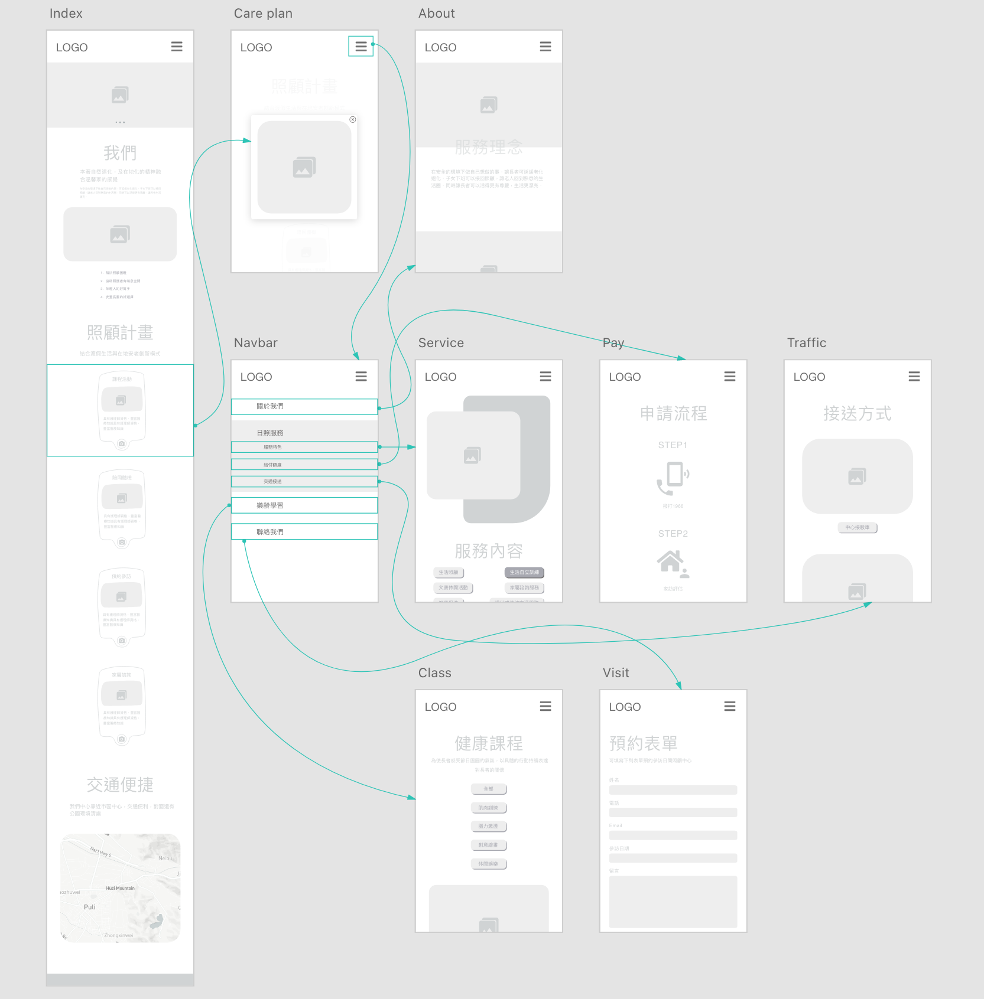
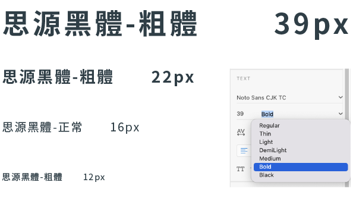

日照中心
企業網站設計・原型製作
幫助使用者了解日間照顧的服務與資訊
背景故事
富立水日間照顧中心是讓長者在安全的環境下做自己想做的事可延緩老化，子女下班後可以接回照顧，讓長者回到熟悉的生活圈，同時可以活得有尊嚴，生活更漂亮。
網站目的
1. 展示多樣化的課程活動，促使長者保持健康、活力達到活躍老化之目的。
2. 提供日間照顧、護理生活照顧服務，讓家屬了解日照的功能並提供長輩安置的場所。
3. 提供中心環境資訊、補助費用諮詢。
網站架構
設計概念
視覺系統
LOGO設計
使用 Fulishui 的 U 擬人化人形，呈現三個人是表現出團圓、圓滿的狀況，以及我們日照中心、長者跟家屬之間的緊密關係圓形的呈現。

字型設計
使用非襯線體的思源黑體 Noto Sans CJK TC，呈現簡單輕鬆風格，在標題使用 bold，內文部分使用 regular。
按鍵設計
在按鈕設計使用填充色＋陰影，讓按鍵更為清楚被看見，尚未點擊時使用灰色色彩，點擊時會變更為次主色 ＃FDBFA6 凸顯目前為被點擊。
#FFAE00
#9D9283
#FDBFA6
#FDEBE8
色彩計畫
主色以 ＃FFAE00 為主，象徵著有朝氣、活力的感覺，次主色以 ＃FDBFA6 使用相近色配色，與主色相關的色彩。
解決方案
滿足需求